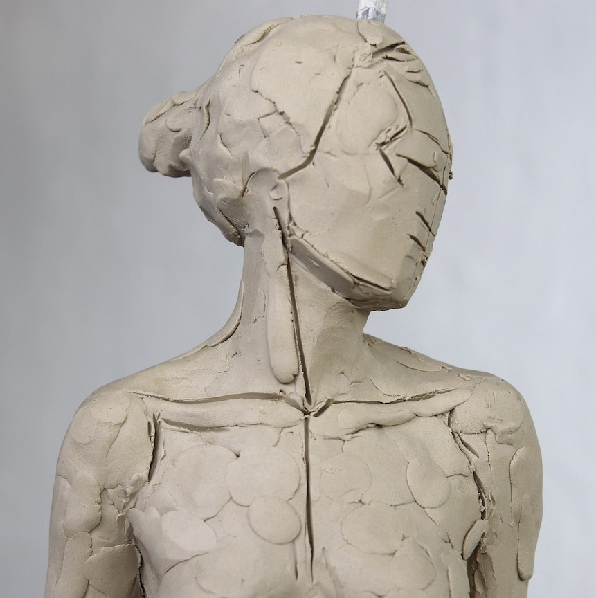

Digital Art
Sculpting 
Animation 
Photography 

Digital art refers to any art created or manipulated using digital technology.
It incorporates drawing, painting, 3D modeling, animation, and photo editing, among other practices. Artists use
software like Adobe Photoshop, Procreate, and Blender to produce artwork on devices such as tablets, computers,
and smartphones.
This medium eliminates traditional limitations, offering a wide range of tools to experiment with styles and
techniques.
Digital art also spans various styles, from hyper-realistic portraits to abstract visuals and pixel art.
This versatility makes digital art accessible to hobbyists and professionals alike, including architects and
designers who use digital technology in art creation to push creative boundaries.
Below are some sites you can try!


Sculpture is the branch of the visual arts that operates in three dimensions. Sculpture is the three-dimensional artwork which is physically presented in the dimensions of height, width and depth. It is one of the plastic arts. Durable sculptural processes originally used carving (the removal of material) and modelling (the addition of material, as clay), in stone, metal, ceramics, wood and other materials but, since Modernism, there has been almost complete freedom of materials and process. A wide variety of materials may be worked by removal such as carving, assembled by welding or modelling, or moulded or cast.
Below are some sites you can try!



Animation is a filmmaking technique whereby pictures are created or manipulated and then played in sequence to create the illusion of moving images. In traditional animation, images are drawn or painted by hand on transparent celluloid sheets to be photographed and exhibited on film. Animation has been recognized as an artistic medium, specifically within the entertainment industry. Many animations are either traditional animations or computer animations made with computer-generated imagery (CGI). Stop motion animation, in particular claymation, is also prominent alongside these other forms, albeit to a lesser degree.
Animation is contrasted with live action, although the two do not exist in isolation. Many filmmakers have produced films that are a hybrid of the two. As CGI increasingly approximates photographic imagery, filmmakers can relatively easily composite 3D animated visual effects (VFX) into their film, rather than using practical effects.
Below are some sites you can try!


Photography is the art, application, and practice of creating images by recording light, either electronically by means of an image sensor, or chemically by means of a light-sensitive material such as photographic film. It is employed in many fields of science, manufacturing (e.g., photolithography), and business, as well as its more direct uses for art, film and video production, recreational purposes, hobby, and mass communication.